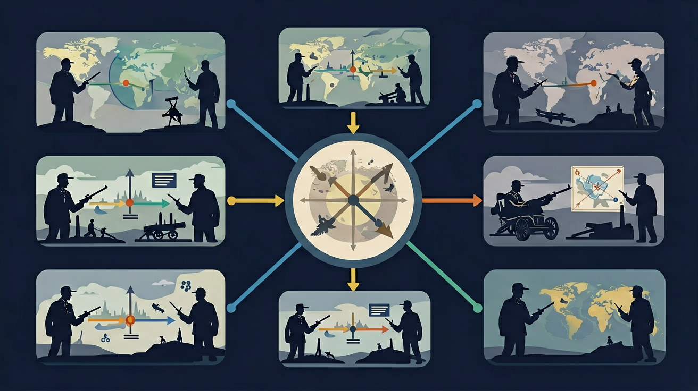

初中9年级学段目标：理解并掌握「第一次世界大战」的基本概念与方法

🎯 能说出帝国主义矛盾是根本原因
🎯 能分析萨拉热窝事件的直接触发作用
🎯 能判断凡尔登战役的'绞肉机'特点
❓ 为什么萨拉热窝事件被称为一战导火索？
❓ 同盟国和协约国是怎么打起来的？
❓ 一战对普通人的生活有什么影响？
学完这一课，这些问题你都能自信地回答。
一战爆发根本原因是？
凡尔登战役发生在？
第一次世界大战是初中历史的重要内容。初中9年级学段目标：理解并掌握「第一次世界大战」的基本概念与方法
学业要求：能在真实情境中识别、运用「第一次世界大战」解决问题
点击时代按钮切换世界格局；结合本课主题观察空间分布。
把卡片拖到核心概念 / 方法技能 / 应用情境 / 常见误区。
拖完 4 项后自动判分。
迁移任务：找一道与「第一次世界大战」相关的练习题或生活情境，用本课方法完整解答一遍。
帝国主义国家重新瓜分世界的矛盾导致一战爆发。战争规模空前，造成巨大伤亡。战后凡尔赛—华盛顿体系暂时调整列强关系，却埋下新矛盾，也削弱了欧洲、促进民族解放与革命运动。
根源是帝国主义矛盾；过程记同盟国与协约国；结果写胜败与条约体系局限性。
常见误区：常见误区是把导火线当成根本原因。
第一次世界大战的根本原因是？
1. 国际防疫合作：1918年西班牙流感（实际源自美军堪萨斯军营）借战争人员流动扩散，全球5亿人感染。这促使1923年国际联盟建立流行病预警系统，成为当今WHO全球疫情警报机制的前身。日内瓦档案馆保存的原始疫情报告显示，当时已认识到战地医院交叉感染是传播主因。
2. 塑料工业发展：德国为应对英国海上封锁（1915年后进口减少75%），拜耳公司在1917年发明人造树脂"胶木"，替代短缺的天然橡胶。战后该技术转为民用，1926年首款全塑料收音机面世，直接推动现代注塑成型工艺发展。
3. 心理学临床应用：英国军医W.H.R. Rivers在1917年治疗弹震症（shell shock）患者时，发现创伤后应激障碍（PTSD）与大脑杏仁核异常有关。他设计的"渐进暴露疗法"至今仍是心理治疗标准手段，伦敦帝国战争博物馆保存着当年手绘的治疗流程示意图。
1. 问题：如果德国在1917年不实施无限制潜艇战，美国是否仍会参战？分析思路：考察齐默尔曼电报事件（1917年1月）与美墨关系史，注意美国对德贸易额从1914年1.7亿美元激增至1916年8.5亿美元的数据变化，思考威尔逊"十四点原则"中"航海自由"条款的实际经济背景。
2. 问题：为何西线堑壕战持续4年未能突破？分析思路：对比1916年索姆河战役（首日英军伤亡6万）与1918年亚眠战役（坦克集群突破）的战例，结合当时机枪射速（马克沁机枪每分钟600发）与野战炮射程（法国75mm炮8公里）的技术参数，思考防御优势与进攻手段的辩证关系。
先看19世纪末欧洲火药桶如何成型：德国1871年统一后工业产量跃居欧洲第二（1913年占全球15%），与英国殖民霸权产生结构性冲突，双方海军造舰竞赛使无畏舰数量从1906年1艘增至1914年48艘。接着巴尔干这个"欧洲的火药桶"被点燃：奥匈吞并波斯尼亚引发1908年危机，塞尔维亚民族主义组织"黑手社"训练了刺杀斐迪南的普林西普。战争爆发后，施里芬计划原想6周打败法国，却因马恩河战役（1914年9月）破产，形成从瑞士到北海的600公里堑壕战线。当东线坦能堡战役（1914年8月）俄军损失15万时，日本却趁机夺取德国山东殖民地，展现战争的全球性。最后1917年成为关键转折：德国潜艇战每月击沉60万吨商船迫使美国参战，而列宁"和平法令"使东线崩塌。到1918年11月，德国国内革命爆发，基尔港水兵起义，最终在贡比涅森林签署停战协定。战后凡尔赛和约规定的1320亿金马克赔款，埋下了更大冲突的种子。
1. 错误表现：认为萨拉热窝事件是战争爆发的根本原因。认知根源在于学生容易将直接导火索与深层原因混淆。正确理解是：虽然1914年斐迪南大公遇刺引发战争，但根本原因是帝国主义国家间长期积累的矛盾——德国与英国的海军竞赛耗资4.2亿马克（1906-1914年）、法德围绕阿尔萨斯-洛林的领土纠纷持续43年、俄奥在巴尔干的势力争夺导致1908年波斯尼亚危机。这些结构性矛盾才是战争必然性的关键。
2. 错误表现：混淆"同盟国"与"协约国"阵营变化。认知根源在于静态记忆成员国名单。正确理解是：意大利原本属于德奥同盟（1882年三国同盟），却在1915年转投协约国，因其与奥匈帝国存在特伦蒂诺领土争端。同样，奥斯曼帝国1914年加入同盟国，保加利亚1915年加入，这些动态变化反映各国实际利益考量，不能简单背诵初始阵营。
3. 错误表现：将凡尔登战役（1916年）误作战争转折点。认知根源在于对"转折"概念理解片面。正确理解是：虽然凡尔登造成70万伤亡，但真正战略转折是1917年美国参战——威尔逊总统4月对德宣战后，每月向欧洲输送25万美军，到1918年11月已累计200万人，彻底改变双方力量对比。同时俄国因十月革命退出战争（1918年3月《布列斯特和约》），形成东西战线双重转折。
复制提示词到 AI 学伴，生成「第一次世界大战」的时间轴或事件提纲；也可以上传你手绘的示意图，请 AI 学伴点评。
复制后可粘贴到 AI 学伴继续对话。
关于一战性质的描述，哪项最准确？
分析导致第一次世界大战爆发的多种因素
先独立作答，再点选项查看对错与错因。
下列哪一项不是第一次世界大战爆发的主要原因？
一战前形成的"三国协约"包括以下哪三个国家？
一战中首次大规模使用的新式武器是？
一战爆发的直接导火索是____事件。
答案：萨拉热窝
萨拉热窝事件导致奥匈帝国向塞尔维亚宣战
一战中，德国、奥匈帝国和意大利组成的军事同盟称为____。
答案：三国同盟
这三个国家在一战前结成了军事同盟
✅ 同盟国集团整体战败
💡 受二战德国战败印象干扰
✅ 马恩河是初期转折，凡尔登是中期消耗战
💡 对西线战役时序记忆模糊
口诀：帝矛萨火凡尔登，三线绞肉条约定
类比：像班级小团体打架，最后全班被罚（类比战争波及多国）
《凡尔赛和约》对德国处罚不包括？
若用班级冲突比喻一战，最贴切的是？
当今哪类冲突最像一战前态势？
点击节点跳转到对应章节；可切换布局。